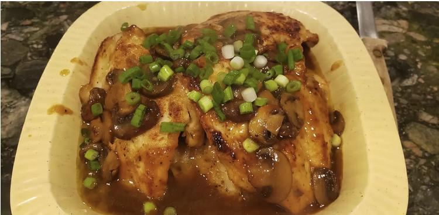

Chicken Marsala

Chicken Marsala is a succulent dish that features thinly sliced pieces of pan-fried chicken breast and mushrooms in a reduced wine sauce. Its name comes from the fortified Italian wine used to give the dish its trademark deep, nutty, and slightly sweet flavor.
- Prep Time:10 mins
- Cook Time:20 min
- Total Time:30 mins
- Servings:4
Ingredients
- 1/4 cup all-purpose flour for coating
- 1/4 teaspoon salt
- 1/4 teaspoon dried oregano
- 4 medium skinless, boneless chicken breast halves - pounded 1/4 inch thick
- 4 tablespoons butter
- 4 tablespoons olive oil
- 1 cup sliced mushrooms
- 1/2 cup Marsala wine
- 1/4 cup cooking sherry
Directions
- In a shallow dish or bowl, mix together the flour, salt, pepper and oregano.
- Coat chicken pieces in flour mixture.
- In a large skillet, melt butter in olive oil over medium heat. Place chicken in the pan, and lightly brown.
- Turn over chicken pieces, and add mushrooms. Pour in wine and sherry.
- Cover skillet; simmer chicken 10 minutes, turning once, until no longer pink and juices run clear.
- Serve hot and enjoy!
Nutrition Facts(per serving)
- Calories: 448
- Fat: 27g
- Carbs: 13g
- Protein: 29g